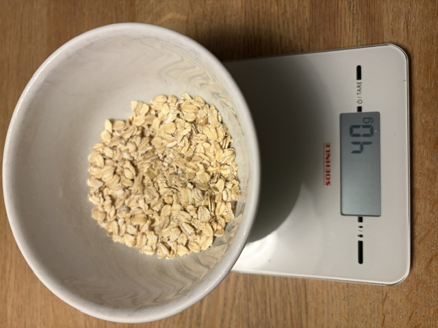
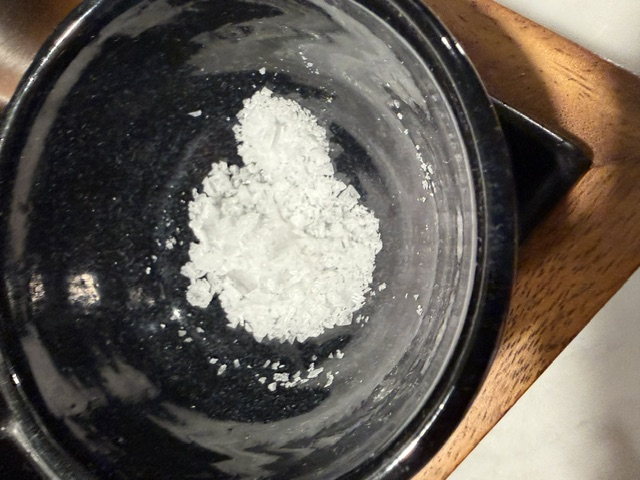

About the food
Oatmeal poridge is a traditional nordic food made by boiling oats in water. It origienated around the midle ages.

Oatmeal poridge is a traditional nordic food made by boiling oats in water. It origienated around the midle ages.


